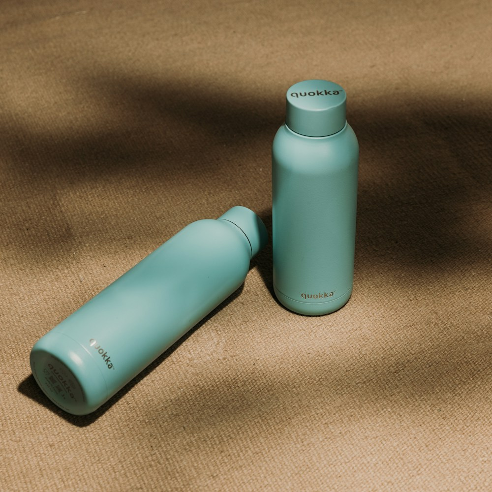

策略层人群 · 主卖点✓
节拍层结构 · 时间轴✓
镜头层画面 · 口播 · 作用✓
元素层钩子 · 花字 · 行动引导✓
↗看清每个镜头为什么出现
四层拆解，还原卖货逻辑
识别视频卖给谁、主打什么、如何推进。输出时间轴和分镜表，多条参考视频还能提炼共性结构。
拆钩子、看节奏、找差距。
把参考视频，变成适合自己商品的拍摄脚本。

示意素材冰水撑不到通勤人群 → 冰水变温 → 保冷实测
把口头卖点变成可以看见的实拍，
再用花字补齐静音观看的信息。
一个 Skill，接起素材分析与下一轮创作。
从开场到收尾，每一处分析都对应具体的创作决定。
识别视频卖给谁、主打什么、如何推进。输出时间轴和分镜表，多条参考视频还能提炼共性结构。
痛点实拍 + 大字花字
品牌 Logo 片头 2 秒
按同一套框架分析双方，给出差距表、7 维评分与优先的 3 个改法，把建议落到改版脚本。
检查痛点、证明和行动引导
是否能通过画面与花字理解。
结合 OCR 与画面分析，整理屏幕文字，判断关键卖点是否只藏在口播里。
没有检测报告 → 不写检测数字
结合卖点、价格、人群和证据，给出 3 个创作角度。推荐一个，再写出完整分镜和口播。
以上为虚构案例的输出示意，用于展示分析方式。
从分析、改法到新脚本，看看每种任务会得到什么。
| 时间段 | 结构作用 | 画面 / 口播安排 | 分析关注点 |
|---|---|---|---|
| 0–3s | 钩子 | 杯子特写 +「冰水撑不到中午？」 | 首帧点明具体痛点 |
| 3–6s | 痛点 | 普通杯子里的冰已经融化 | 建立对比对象 |
| 6–11s | 证明 | 倒冰块，记录实测过程 | 让卖点有可见证据 |
| 11–13s | 结果 | 展示下班后的杯内状态 | 实际结果需有实拍支持 |
| 13–15s | 行动引导 | 口播 + 花字说明购买入口 | 给出明确的下一步 |
可迁移：痛点切入、对比结构、实拍证明。需单独判断：品牌、人设、投流、原素材表达。
| 维度 | 参考视频 | 自家视频 | 优先改法 |
|---|---|---|---|
| 首帧 | 痛点实拍 + 大字 | 品牌 Logo 片头 2s | 删掉片头，首帧换成痛点画面 |
| 主卖点 | 1 个卖点 + 实测 | 4 个卖点口播罗列 | 保留一个主卖点，补上实测镜头 |
| 行动引导 | 最后 2s 口播 + 花字 | 缺少下一步提示 | 明确购买入口，优惠信息须属实 |
示例分数，仅演示输出格式。
7 维评分权重为初稿，待真实样本校准。
下一步：按上述改法写出改版脚本，并用真实素材表现继续验证。
| 段落 | 画面 | 口播 / 花字 | 拍摄要求 |
|---|---|---|---|
| 开场 | 灶台油渍特写 | 「做完饭，这块油渍你怎么擦？」 | 拍摄真实清洁场景 |
| 演示 | 抽出湿巾，擦拭灶台 | 「抽一张，直接擦。」 | 保留使用过程 |
| 证明 | 依次演示灶台、油烟机、瓷砖 | 标注对应使用场景 | 核实商品适用表面 |
| 收尾 | 商品包装与规格 | 展示已确认的价格和规格 | 价格、活动信息须属实 |
没有检测报告，删除「去污率 99%」等数字。以真实使用过程支撑卖点。
完整格式与虚构案例已随 Skill 提供。
在 GitHub 查看完整示例根据你提供的素材，自动进入拆解、对比或新脚本流程。
上传 mp4 / mov，或给本地路径。
文件名前加「爆款_」「自家_」，
让视频角色一目了然。
说一句「拆一下」或「看看我差在哪」。
想写新脚本，再附上商品卖点、
价格、人群和证明材料。
看时间轴、分镜表与差距表。
根据建议调整拍摄，或按新脚本
准备自己的素材。
标准 SKILL.md 格式，MIT 免费开源。
首次安装后，按 README 配置 Python、FFmpeg
与需要的 OCR / ASR 工具。
mkdir -p ~/.claude/skills
git clone https://github.com/guojunyu12/ecom-video-breakdown.git \
~/.claude/skills/ecom-video-breakdown可以尝试分享链接或口令，但下载受分享页结构和平台风控影响。失败时，请在抖音 App 保存视频，再提供本地文件。视频文件是优先路径。
按你在消息、文件名或文件夹里明确标注的角色处理。如果角色不清楚，先展示首帧、时长和文件名，确认一次后锁定标签，不根据画质、水印或上传顺序猜测。
可以由 Agent 直接看帧读花字，或使用你提供的口播文案。报告会注明信息来源。只有截图或文案时也可以部分分析，但会标注信息不完整。
不能。评分用于整理结构差距，7 维权重目前为待校准初稿。报告会标注爆款证据等级和不可迁移因素，不预测播放量、成交额或保证投放效果。
这个 Skill 输出分析、改法和脚本，不负责剪辑或生成成片。新脚本学习结构，重新写画面和台词；请使用你有权分析的素材，商品效果和数字须有证据支持。
已有合成视频测试，站内案例均为虚构。真实带货视频完整流程、真实抖音下载成功路径及部分 OCR / ASR 引擎仍待验证；合规检查是风险提示，平台规则以最新官方信息为准。
带上你的视频，让分析变成具体的拍摄决定。